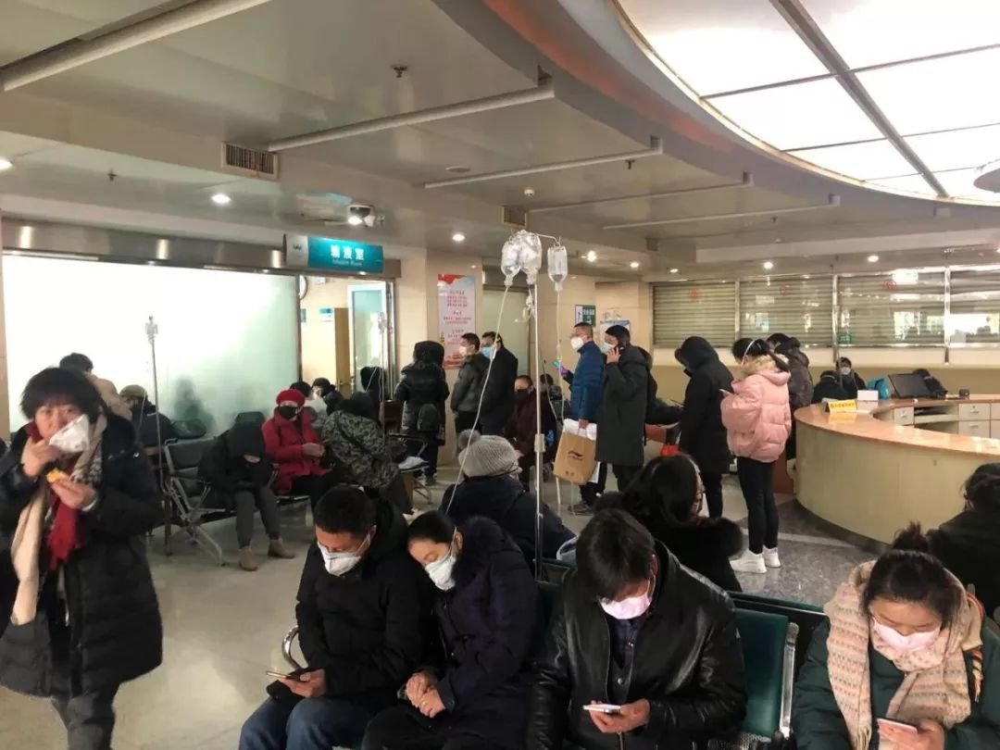
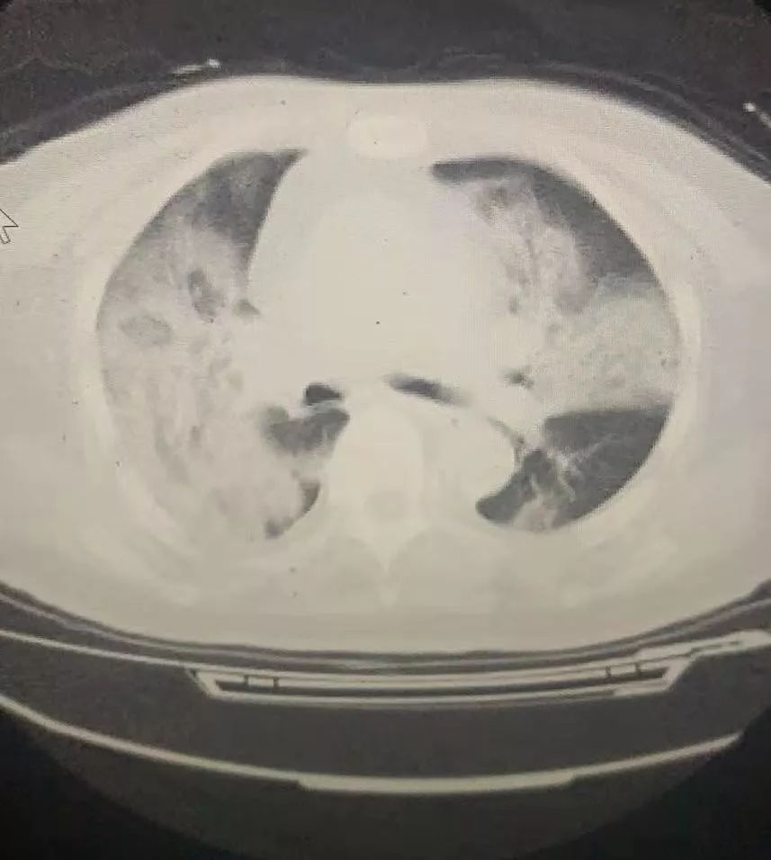
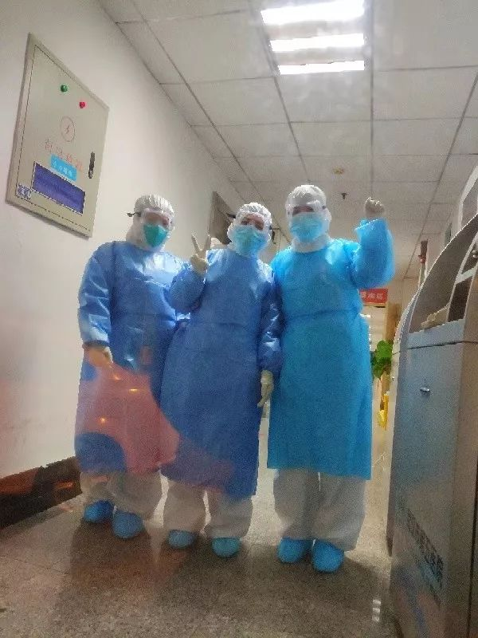

一个河北县城的防疫：建成隔离病区，医护缺乏专业口罩
原文链接 备份链接 ********** *****春节期间，街边摆摊卖走亲戚用礼品盒的越来越少，仅有的几个摊主都戴着口罩。**********一位摊主介绍：**********“今年来买东西的少了，路上的人也少了。**********” …

1月28日下午三时，中国青年报·中国青年网记者实地探访武汉市第五医院输液室。
本文约4534字
预计阅读时间12分钟
中青报·中青网记者 王嘉兴
这是一位坚守在抗击新型肺炎一线医生的自述。她经历了疫情初期所在医院的慌忙无措，和自己从医31年来最不平凡的除夕夜。在她的讲述中，我们能看到那段特殊时期的严酷真相，更能看到一线医护人员对职业责任的坚守。这些都是值得铭记的。征得她的同意，我们公开她的实名：武汉市第五医院消化内科吕小红主任。祝她和同事健康平安，祝医院的秩序和保障尽快走上正轨。
她说，2019年12月25日就听说有医护人员疑似感染；
2020年1月2日，她建议本院设立发热门诊；
1月6日起，她所在的医院接到了很多疑似病例；
1月20日，她给附近高中的校长发去短信，让给原计划补课的高三学生放假；
她还说，除夕夜流传的医生在办公室号啕大哭的视频，是真的。她的同事、一名70多岁的老主任发来短信，说如果需要，自己随时回来顶班。
1
2019年12月25日前后，我就听说武汉市两家医院有医护人员疑似感染不明原因的病毒性肺炎，并被隔离，其中还有呼吸科的医护人员。我当时就意识到，情况可能不简单。
内科，尤其是呼吸科的，不可能不知道病毒性肺炎怎么防护。他们本身就是医护人员里面最谨慎、最会保护自己的。连他们都被感染了，说明传染性可能很强。
病毒性肺炎每年都有，但我找同行了解后发现这次的病毒不太一样，有些人不咳嗽、不发烧，常规症状都好了，但肺部CT片的情况却很不好。当时我就让同事们注意，还开玩笑说是不是该买口罩了。
后来我越想越觉得不对劲，到了2020年1月2日下午参加医院述职会时，我忍不住和院领导提建议，是不是要把发热门诊正式开起来，建立规范的检疫、导诊程序。本来流感季也到了，急诊压力很大。领导当场就同意了。
之前，发热门诊是挂靠在感染科门诊下的，病人之间很可能交叉感染。据我了解，武汉市不单独开设发热门诊的医院不在少数，因为发热门诊、感染科门诊都没什么利润。第二天下午，医院就接到了上级要求，不仅要设置发热门诊，还要开设发热病房，收治患有不明原因肺炎的病人。

1月28日下午3时，武汉市第五医院门诊大厅
我们医院不是传染病医院，并不具备隔离条件，当时是腾出了一层楼，连夜赶工重新装修做隔离处理的。1月6日前后，我们就收到了转诊来的两三例疑似感染的病人，和一个家族性聚集的多人疑似病例。
事实上，从1月6日起，我们的门诊和急诊就接到了很多疑似病例，10日，我们就已经看不过来急诊了；呼吸科病房也满了，我估计其中三分之二是病毒性肺炎，为了避免交叉感染，非病毒性肺炎就不再往呼吸科病房送了。此外，还有很多不明原因发热的病人进入消化科、肾内科、心血管科。
1月10日以后，疑似的病人就只能往其他病房收。但这期间，只有在发热病房的医护人员像现在穿防护服，其他科室，包括呼吸科都只是穿了白大褂和普通医学口罩。事后回想，可能就是因为防护不到位，加上这些病人可以到处流动，导致了疫情的扩散。后来各地疾控部门的发布的消息显示，后来的很多确诊患者，都是1月10日前后在武汉活动过。
但在当时，病人、医务人员乃至医疗界，都没有认为这是一个很严重的事情，完全没有预料到会井喷一样地爆发。
1月18日前后，我听说武汉协和医院发热门诊的医护人员开始穿防护服了，还专门腾出一栋楼收治发热病人，我才意识到情势可能很严峻。我呼吁大家不要到处走，建议分区管理，开电子会议，但当时大家都没有当回事。

医护人员在引导秩序
1月20日是周一，那天清晨7点，我给附近高中的校长发去短信，告知形势不对，赶快放假。学校高三的学生本来计划要继续补课，校长听了我的话，立刻放假了。
当天晚上，央视播出了采访钟南山的消息，我们才确信这个病毒能人传人。我意识到，我们轻敌了。
2
其实我了解这个病并不比大家早，确认的信息我也都是从新闻里看来的。
我们从1月3日开始做病毒性肺炎培训，但没有人说是新型的，只是告诉大家要注意，这个肺炎可能是和以前不一样的病，但那个时候不知道是新型冠状病毒肺炎。
一直以来，我们的物资就很紧缺，库存的防护服不到100套。1月21日我们接到通知，要在23日下午6点前把医院清空，只接收发热病人。
我曾经作为一线医生参与了2003年非典、2009年禽流感、2012年甲流的疫情防控，有呼吸道传染病的防治经验，所以我也参与了医院病区的改造。
我们真的太缺设备了，平常每年冬季流感季，心内监护仪、呼吸机、指氧仪就很紧张，现在更不够了。我们甚至连输液的钩子都不够。
22日晚上5点半的时候，领导突然要我们提前接诊。但这时，污染区、半污染区、清洁区的都只是设计好，整个系统也还没来得及调试。而且，我们没有防护服、N95口罩和护目镜。
我很强硬地拒绝了领导。我说，防护用品不到位就不许工作，不然等于是在病毒面前“裸奔”。后来，一名护士长帮我们从别的科室借了7套防护服，我们才开始工作，但仍然没有N95口罩，我们只能戴双层或者三层医用外科口罩。按道理这是不符合规范的，但我们没办法。
开始接诊后，黑压压的人群往门诊部里涌。整个门诊部就像菜市场一样乱糟糟的。病人互相扯皮，很多都带着家属，还有人录像，怪我们没有做好隔离，觉得自己是在我们这里被感染的。
急诊那边一次转进来10个人输液，但是每个人都要求先给自己打，这一批还没有处理完，下一批又来了。一整个晚上，护士打针就没停过，打一个就让病人自己拿着吊瓶去找凳子坐。结果有的病人还不满意，骂骂咧咧，要求护士给送到座位上。
因为护目镜有点儿起雾，打针时，护士要把护目镜取下来。本来护士应该戴面罩的，那样才能看得清。但我们至今都没有面罩。
到了第二天，门诊部直接挤满了人，连站的位置都没有，这得有多少交叉传染啊。医院也没有力量管理秩序，这些病人到处乱走。粗略统计，看病4小时，等拍肺部CT要4小时，我很怕出乱子。有些病人真的很可怜，有的很严重，家属流着眼泪求我们救命，但我们没有病床，无法收治。
有一个医生和我说，她那天送到输液处的几乎全是“病毒肺”。CT片里，肺部像棉絮一样，最年轻的只有30岁。但我们实在没有能力收治。等他们打完针回家，又会造成更多感染。

一名疑似患者的肺部CT图，肺部基本全“白”了
后来我才了解到，1月22日晚上，有三分之二的病人都曾在别的医院看过。但很多医院已经不收发热病人，引导患者到我们这些定点医院就诊。也有定点医院1月22日晚接到上级提前开始接诊的要求，但被院领导以未准备充分为由拒绝了。
很多医生也没准备好，没有经历过传染病的救治，没有经验。比如武汉一家很好的医院的一个外科医生，接触了这样的病人也没有当回事，竟然去了医院的内科、急诊，发病也没有及时告知同事，其他人都跟着他一起感染。连当医生的都没有警觉，整个局面完全是被动挨打。
3
1月21日接到我们医院要转为发热病人定点医院时，一名医生说孩子还很小，自己很害怕，想要辞职。我很理解她，我也很怕。但我为她职业发展的考虑，还是劝她坚守。我说，我可以批准你辞职，但这会给你留下“污点”，未来去任何单位，你都会被当成是“逃兵”。
她没有辞职，还作为一线医生经历了1月22日晚上医院最混乱的场景。没想到次日清晨回家后，她就开始出现被感染的症状。返回医院接受检查后，她被认为是疑似患者，但因为没有试剂盒而尚未确诊。
我让她赶紧回家休息，她却说，“主任，我找个地方查一下吧。如果不是，我还想回来和大家一起战斗。”我当时想，如果她痊愈了，这就只是一个遗憾；她才20多岁，万一出了事，我作为她的主任怎么活下去？我怎么赔这个家庭一个女儿、一个妈妈。
这件事情让我很难过，我怕影响军心，一个人躲到外面哭了很久。
我们有一位医生，孩子才7个半月，本来是可以回家过年的。但疫情爆发后，她强行把孩子的母乳断掉。另一个医生，让亲戚带着两个孩子回老家，她丈夫也是大夫，早就上了一线。一天晚上人员特别缺乏，她在一线顶了一夜。考虑到她的健康，我没有在后一天排她的班。结果她看到排班表后，来找我，说自己随时待命，该怎么上班就怎么上班。
还有一名70多岁已经退休的老主任给我发来短信，说如果需要，自己随时回来顶班。我们做这些不求什么表扬，只求病人平平安安，只求自己平平安安。这不是什么漂亮话，是医生的基本道德。
说句实话，在这里的人没有不怕的，不怕都是假的。我们明知道这里面是个大污染区，但都顶在一线。大家选择一起住在宾馆、待在医院，就是想能互相壮胆，互相安抚。
最近半个月，我每天只能睡2、3个小时，因为要协调安排的事情太多了。手机里一有医生护士的消息我就马上回，我就是想让他们知道，即便我暂时不在医院，我也和他们在一起。
很多人怕感染家人，也为了随时待命，就住在医院安排的酒店里。但医院的食堂只给值班人员提供伙食，在宾馆休息的医护人员就吃些泡面和零食。我家在医院附近，下了班有空时，就会做饭给他们送去。
因为自己是高危人群，我让儿子出去住，但我的亲戚不愿意让儿子去他们家，因为怕被传染。可我的儿子也不会做饭，每天就下点面条，或是泡面吃。除夕夜，我给我的亲戚打电话，让她炒一个菜，放到儿子住处的楼下就行，儿子自己下去拿，起码让他大过年的能吃一顿好饭。我在家里烧菜给我的医生吃，可是没有人给我的儿子烧菜吃，你说我的心不痛吗？
4
除夕夜，网上流传好几段医生在办公室崩溃大哭的视频。这是真的，有一段视频中的医生就是我们医院的。另一个视频里，情绪激动打电话的男医生也是我们医院的。事实上，由于过度紧张疲惫，每个科室的医生们不知道都哭了多少次了。
死亡让我流泪。我接手过一个病人，肺部已经完全纤维化了，我看着她的血氧从80降到70、60，一点点往下掉。她抓着你的手，说医生求求你救救我。你说当医生的看到这一幕谁能受得了。
我们愿意拼命，但基本的保障要解决啊。脱下防护服后，每个人一身汗，可医院只有两个时段有热水，时间一旦错过，就没法洗澡。医院安排的宾馆，一个科室只给两间房，根本不够睡，只能一张床挤两个人。

部分医务人员没有防护服、N95口罩，只能穿隔离服，戴多层口罩
患者太多，我们没办法一直保持心平气和，但我们一定是想要让病人活下来的。大家都在和死神赛跑。有一个急诊科医生央求设备科给再提供一台呼吸机，因为之前的一台在复苏完一名患者后，已经一起送进ICU了。
病人太多，场面混乱。我曾建议，可以做好调查表给患者打勾，设置好几组处方，让医生勾选，这样能提高效率；门诊有两个门，可以安排一个门专门进，一个门专门出，像安检一样；发烧的分两个区域，一个区域看轻热，一个看高热。但所有人都已经放弃休假顶上一线了，意见来不及被采纳。我理解。
这几天，情况缓解了很多。市新型肺炎防控指挥部安排了分级分类诊疗，一些发热的市民前往社区卫生服务中心进行筛查。医院门诊量与前几天减少了一些。1月28日下午3点，患者就诊、拍CT片，差不多各排一到两个小时，不过输液还是要排三四个小时。现在保安、清洁人员也穿上了蓝色的隔离服，医院秩序不错。可我们心里还是没底，N95口罩仍然缺，不知道后面的物资是不是跟得上。
我21岁开始做医生，34岁成为医院年纪最小的主任之一，到今年就满52岁了。我真心希望不要再有这样的经历了，希望以后医院管理能好起来，传染病的防控能更好。
有一天上班前，我告诉我的同事们，我们要去打仗了，要照顾好自己，我们杀出一条血路，活下来。等疫情过去了，我们集体出境游，费用我一个人出。
我说，只要我活着，就算数。
(慕宏举对本文亦有贡献)
本文由中国青年报独立出品，首发在中国青年报客户端及头条号，加入树木计划。
PS：我们正在寻找采访对象！
不管你在湖北还是其他地区，不管你在城市还是农村，只要你是正在抗击疫情的医务工作者、患者、患者家属、公务人员、医疗防护设备厂商……只要你注意到、了解到一些对我们此次应对疫情很重要的线索、情况，请与我们联系。
请让信息流动，而不是“隔离”！
记者的联系电话如下（ 微信同号，记者可能正在采访，可以先添加微信）：
中国青年报记者马宇平 17610570707
中国青年报记者耿学清18311290198
中国青年报记者秦珍子 18610675921
中国青年报记者李强 18510412824
中国青年报记者尹海月 13552495478
中国青年报记者魏晞 13011108295
中国青年报记者刘言 18513956326
邮箱：wuhanstory@126.com（请注明联系方式）
中国青年报·中青在线出品
微信编辑 | 陈轶男

觉得好看请点这里
原文链接 备份链接 ********** *****春节期间，街边摆摊卖走亲戚用礼品盒的越来越少，仅有的几个摊主都戴着口罩。**********一位摊主介绍：**********“今年来买东西的少了，路上的人也少了。**********” …
原文链接 备份链接 武汉封城、公共交通全部关停以后，陈述杰和几个朋友一起召集起一支4000多人的爱心车队，为武汉市的医务工作者们提供后援支持。直到1月25号，团队里已知至少三人出现发热，公益接送医生行动暂时停止，他们仍然在帮忙运输医疗物 …
原文链接 备份链接 武汉各大医院发热门诊的紧张态势已有一周，七家定点医院启动才两天已被压到极限。 武汉不缺顶级医院，不缺顶级专家，不缺顶级医疗能力，缺的是公共卫生防控能力、行政效率和疫情处理流程。 在患者和大医疗机构之间，未见到基层 …
原文链接 备份链接 记者/韩谦 魏晓涵 李佳楠 张帆 颜星悦 佟晓宇 梁婷 李东 郭慧敏 实习记者/陈威敬 龙天音 编辑/杨宝璐 宋建华 被确诊为河南省首例新型冠状病毒感染的肺炎患者，曾于1月8日在太康县人民医院治疗 国家卫健委消息，截 …
原文链接 备份链接 3月21日。 封城第59天。这么长时间了！ 昨天那么大的太阳，今天突然就阴了。下午还下了点雨。这时节的春雨，对于院子里的树以及花，都还是很需要的。前两三天，武大樱花盛开，树下空荡无人，估计是记者拍了一些照片，同学群里便 …